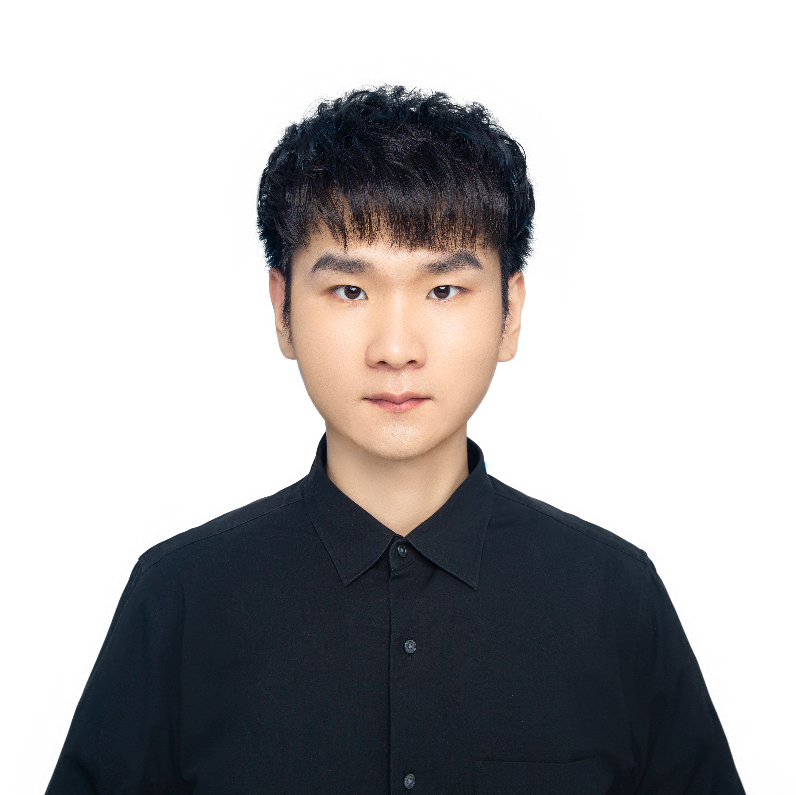

Bohan Li - 李博涵
Email: bohan.li77_at_gmail.com [GitHub] [Google Scholar] |
 |
Biography
I'm a Ph.D. student at Shanghai Jiao Tong University (SJTU) and Eastern Institute of Technology(EIT), Ningbo, advised by Prof. Xin Jin, Prof. Wenjun Zeng, Prof. Chao Ma, and Prof. Xiaokang Yang. My research interests lie in esearch interest in 3D computer vison, especially focusing on 3D scene comprehension and multi-modal genration. Before joining SJTU, I was a computer vision algorithm engineer at Tencent AI Lab, working on large-sclale 3D city scene generation and reconstruction. I did my Master degree at South China University of Technology (SCUT) and Bachelor degree at Northeastern University (NEU). I have also spent some time at BAAI, Lixiang, MEGVII Research, IDEA, NetEase AILab, PhiGent Robtics, ZTE Corporation.
Research
I have a broad research interest in 3D computer vison, including Autonomous Vehicles and Robotics, 3D Scene Comprehension and Generation, 3D Structed Information Processing, Representation Disentanglement, Explainability of AI systems.
News
Selected Publications (*Equal Contribution, †Corresponding)

|
OccScene: Semantic Occupancy-based Cross-task Mutual Learning for 3D Scene Generation Bohan Li, Xin Jin†, Jianan Wang, Yukai Shi, Yasheng Sun, Xiaofeng Wang, Zhuang Ma, Baao Xie, Chao Ma, Xiaokang Yang, Wenjun Zeng. IEEE Transactions on Pattern Analysis and Machine Intelligence (IEEE TPAMI) |

|
UniScene: Unified Occupancy-centric Driving Scene Generation Bohan Li*, Jiazhe Guo*, Hongsi Liu*, Yingshuang Zou*, Yikang Ding*, Xiwu Chen, Hu Zhu, Feiyang Tan, Chi Zhang, Tiancai Wang, Shuchang Zhou, Li Zhang, Xiaojuan Qi, Hao Zhao, Mu Yang, Wenjun Zeng, Xin Jin†. IEEE/CVF Conference on Computer Vision and Pattern Recognition (CVPR 2025) |

|
NaviNeRF++: Towards Interpretable 3D Reconstruction via Unsupervised Disentangled Representation Learning Baao Xie, Zequn Zhang, Huanting Guo, Qiuyu Chen, Hu Zhu, Bohan Li, Wenjun Zeng, Xin Jin†. IEEE Transactions on Pattern Analysis and Machine Intelligence (IEEE TPAMI) |

|
Challenger: Affordable Adversarial Driving Video Generation Zhiyuan Xu*, Bohan Li*, Huan-ang Gao, Mingju Gao, Yong Chen, Ming Liu, Chenxu Yan, Hang Zhao, Shuo Feng, Hao Zhao†. Conference on Robot Learning (CoRL 2025 SAFE-ROL Workshop Oral) |

|
Unifying Appearance Codes and Bilateral Grids for Driving Scene Gaussian Splatting Nan Wang, Yuantao Chen, Lixing Xiao, Weiqing Xiao, Bohan Li, Zhaoxi Chen, Chongjie Ye, Shaocong Xu, Saining Zhang, Ziyang Yan, Pierre Merriaux, Lei Lei, Tianfan Xue, Hao Zhao†. Neural Information Processing Systems (NeurIPS 2025) |

|
One View, Many Worlds: Single-Image to 3D Object Meets Generative Domain Randomization for One-Shot 6D Pose Estimation Zheng Geng, Nan Wang, Shaocong Xu, Chongjie Ye, Bohan Li, Zhaoxi Chen, Sida Peng, Hao Zhao†. Conference on Robot Learning ( CoRL 2025 Oral) |

|
Hybrid-grained Feature Aggregation with Coarse-to-fine Language Guidance for Self-supervised Monocular Depth Estimation Wenyao Zhang*, Hongsi Liu*, Bohan Li*, Jiawei He, Zekun Qi, Yunnan Wang, Shengyang Zhao, Xinqiang Yu, Wenjun Zeng, Xin Jin†. International Conference on Computer Vision (ICCV 2025) |

|
DiST-4D: Disentangled Spatiotemporal Diffusion with Metric Depth for 4D Driving Scene Generation Jiazhe Guo, Yikang Ding, Xiwu Chen, Shuo Chen, Bohan Li, Yingshuang Zou, Xiaoyang Lyu, Feiyang Tan, Xiaojuan Qi, Zhiheng Li, Hao Zhao†. International Conference on Computer Vision (ICCV 2025) |

|
MuDG: Taming Multi-modal Diffusion with Gaussian Splatting for Urban Scene Reconstruction Yingshuang Zou, Yikang Ding, Chuanrui Zhang, Jiazhe Guo, Bohan Li, Xiaoyang Lyu, Feiyang Tan, Xiaojuan Qi, Haoqian Wang†. British Machine Vision Association (BMVC 2025) |

|
TAPTRv2: Attention-based Position Update Improves Tracking Any Point Hongyang Li, Feng Li, Hao Zhang, Tianhe Ren, Shilong Liu, Bohan Li, Zhaoyang Zeng, Lei Zhang†. Neural Information Processing Systems (NeurIPS 2024) |

|
Hierarchical Temporal Context Learning for Camera-based Semantic Scene Completion Bohan Li, Jiajun Deng, Wenyao Zhang, Liang, Dalong Du, Xin Jin†, Wenjun Zeng. European Conference on Computer Vision (ECCV 2024) |

|
Closed-Loop Unsupervised Representation Disentanglement with β-VAE Distillation and Diffusion Probabilistic Feedback Xin Jin*†, Bohan Li*, Baao Xie, Wenyao Zhang, Jinming Liu, Ziqiang Li, Tao Yang, Wenjun Zeng. (*Equal Contribution) European Conference on Computer Vision (ECCV 2024) |

|
Bridging Stereo Geometry and BEV Representation with Reliable Mutual Interaction for Semantic Scene Completion Bohan Li, Yasheng Sun, Zhujin Liang, Dalong Du, Zhuanghui Zhang, Xiaofeng Wang, Yunnan Wang, Xin Jin†, Wenjun Zeng. International Joint Conference on Artificial Intelligence (IJCAI 2024) |

|
One at a Time: Progressive Multi-step Volumetric Probability Learning for Reliable 3D Scene Perception Bohan Li, Yasheng Sun, Jingxin Dong, Zheng Zhu, Jinming Liu, Xin Jin†, Wenjun Zeng. AAAI Conference on Artificial Intelligence (AAAI 2024) |

|
NaviNeRF: NeRF-based 3D Representation Disentanglement by Latent Semantic Navigation Baao Xie, Bohan Li, Zequn Zhang, Junting Dong, Xin Jin†, Jingyu Yang, Wenjun Zeng. International Conference on Computer Vision (ICCV 2023) |

|
Robust Scale-Aware Stereo Matching Network James Okae, Bohan Li, Juan Du†, Yueming Hu. IEEE Transactions on Artificial Intelligence (TAI) |
Experiences
|
Project Leader & Research Intern Topic: Large-scale 4D Reconstruction and Generation |
|
|
Project Leader & Research Intern Topic: Scalable Multi-modal Driving Scene Generation |
|

|
Project Leader & Research Intern Topic: UniScene: Unified Occupancy-centric Driving Scene Generation |

|
Research Intern Topic: Occupancy-based Scene Generation, Long-term Consistent Perception |
|
Full-time Research Engineer Topic: Large-scale 3D City Scene Generation and Reconstruction |
|
|
Research Intern Topic: Robust 3D Perception and Reconstruction |
|
|
Engineer & Research Intern Topic: Semantic Scene Completion, Depth Estimation, Stereo Matching |
|

|
Research Intern Topic: Monocular Depth Estimation, Real-time Stereo Matching |
Academic Services
-
Conference Reviewer:
CVPR 2025-, ICCV 2025-, ECCV 2024-, NeurIPS 2024-, ICLR 2026-, AAAI 2025-, IJCAI 2025-
Journal Reviewer:
IEEE T-PAMI, IEEE T-IP, IEEE T-MM, IEEE T-CSVT, IEEE T-AI, IEEE RA-L
© Bohan Li | Last updated: September, 2025